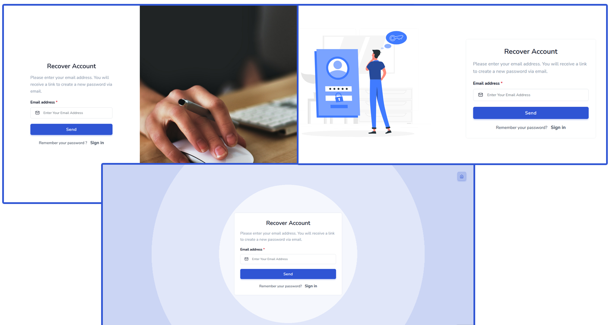

“Advanced Security - Login Register with Social Account using PHP” Documentation by “Subhashree Nanda” v2.0
Advanced Security
PHP Register/Login System using PHP
Created: 24/09/2021
By: Subhashree Nanda
Email: contact@a2zwebhelp.com
Thank you for purchasing my theme. If you have any questions that are beyond the scope of this help file, please feel free to email via my user page contact form here. Thanks so much!
Table of Contents
- Introduction
- Folders and Files Structure
- How to Install
- Register with your email
- Integrate Facebook
- Integrate Twitter
- Integrate Google
- Upload and Test
A) Introduction - top
PHP Login/ Registration System is a complete login and registration system developed in PHP and MySQL which includes registration with Email id, Facebook, Twitter and Gmail. The registration and login form is designed in HTML5 and Bootstrap4 with jQuery validation. It is very easy to install and integrate with your existing project.
B) Folders and Files Structure - top
Please download A2Z_Login_Register.zip file and unzip in your system. You will get "A2Z_Login_Register" folder which contains all files and folder required to run this program. You can see two folders in the root directory 1. database and 2. Login-register. Database folder contains the SQL file to create the register table. And register folder contains total 8 folders and 22 PHP files.
Facebook: This folder contains all library file and setting files in PHP. No need to change any PHP library files, you need to change "settings.php" file which we will discuss later.
google: This folder contains Google login API file and setting file.
instagram: This folder also contains the API files and setting files.
linkedin: This folder contains library files and config file.
pinterest: This folder contain library file and setting file.
twitter: This folder contain library file and config file.
You need to run register.php or login.php
C) How to Install - top
Step-1: Create Database /Table
Before running the project you need to create the register table. If you have an existing database then imports "loginregister.sql" to your database. If you don’t have any database then creates a database and imports the files.

Step-2: Change the connection file
Now you need to change "connection.php" file with your values. You need to change $username, $password and $dbname with your database name.
Step-3: Copy / Upload files to Server.
Now upload all file to your server through any FTP program you use. Let’s assume your folder name is register. To run the programs enter https://www.yourdomain.com/index.php in your browser.
In this project you will get 3 different design template for login, register and forgot password. The new user can either register by filling up the registration form or by clicking on any social media icon. And if the user register before then he/ she can login by entering user name and password or clicking on the social media icon he had registered with. If the user regiser with email then confirmation email will go to user's email. Once the user click on activation email, the account will be activated.
D) Register with your email - top
This is the basic registration process of any registration form, enter Fast name, last name, email address, password and confirm the password to create a new account. Once the user enters all information the data will be stored in our database and activaion email will go to usders email. Once user activate the account by clicking on the link sent in the email, the user becomes a registered member. The password will be encrypted and store in the database.
There are 3 different registration design available
If the user enters correct email address and password then the system will take the user to user dashboard page. Here you can uplaod your profile picture and update user information. Please note: chnage password and edit profile information are editable other are for demo only.

Forgot Password?
The system also provides forgot password facility, the user needs to enter the correct email address. If the email address match with our database then the system will send reset password link to the user's email address. Same as login and register you will get 3 design for fogot password.

Reset Password
E) Integrate Facebook - top
To integrate Facebook login registration system you need Facebook App Client Id, Client Secret, Client Token and also you need to set Redirect URL which will return back to your system after getting authorization. Most important your server should be SSL enabled and the system should run on HTTPS.
How to generate Required Keys for Facebook:
Go to Facebook Developer (https://developers.facebook.com/apps) account and logged in with your Facebook user name and password, then create New App and fill up the form and register your website and click on "Create App ID".
After you have created the App ID and entered your website’s URL it will generate the App ID , App Secret and Client Token.
To get your Client Token go to settings (Left Panel)> Advanced, here you will get your Client Token
Once this is done now set your redirect URL from left panel go to Facebook Login > Settings
Once every thing is set, save the changes.
Now open the folder you have downloaded, go to the Facebook folder and open "settings.php" file and replace the key values.

Save the file, No need to do any other changes. Now the system is ready to Login and Register through Facebook.
F) Integrate Twitter - top
Same as Facebook to integrate Twitter you need Consumer Key and Consumer Secret.
How to generate Required Keys for Twitter:
To generate the key you need to login to Twitter Developer (https://dev.twitter.com/) account with your Twitter user name and password. After successfully logged in to Twitter Developer account click on create new App and fill up the required information.
After you fill up all information it will generate required keys.
Now open config.php file in twitter folder and change the keys and save the file. Now the system is ready to Login and Register through Twitter.
G) Integrate Google - top
Like other social media, we need we need Client id and Client secret from Google. It can be generated through your Gmail account login in details.
How to generate Required Keys for Google:
To generate keys for Google, please login to Google developer account and create a new project. Enter required info to generate the keys. (https://console.developers.google.com/) Also, don't forget to enter your redirect URL.

Once you generate the keys please open settings.php in google folder and change the values.

H) SMTP Setup - top
In the include folder you will get "mailconfig.php". This file is used to setup your mail settings.
H) Upload and Test - top
Once you create all the required keys and update the related file now it’s time to upload all file to the web server and test our program. You can use any FTP program to upload your files to the server. Before starting the system or run register.php file please double check you did the following changes to the following files.
- connection.php(includes folder): Changed the values with your database user and password.
- settings.php in Facebook folder.
- config.php in twitter folder.
- settings.php in google folder.
- mailconfig.php include folder.
Once again, thank you so much for purchasing the code. As I said at the beginning, I'd be glad to help you if you have any questions relating to this code. No guarantees, but I'll do my best to assist.
Subhashree Nanda